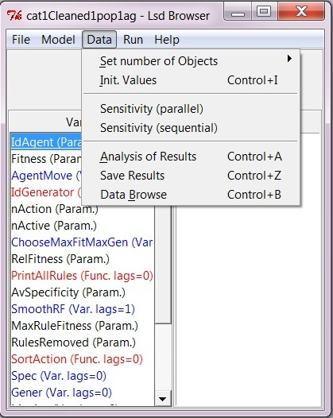

HyperManual Lsd
Windows Main Browser Lsd
FAQ's
Menu "Data"
This menu deals with all the numerical aspects of the model, either
by setting the values required to start a simulation, or by dealing
with
the values resulting from a simulation run.

Other Menus of the Browser:
Menu File
Menu Model
Menu Run
Menu Help
Menu "Data" Entries:
Set number of Objects
This option allows the user to change the number of objects in the
model. This operation can be quite complicated for models with complex
structures, and Lsd offers two options:
1. Set all types of objects. This options
shows every single grouping of objects, allowing to decide their
number. However, for large models, this option can be slow and
inefficient.
2. Set only this type of objects.
This option allows quickly to decide the number of objects of the type
shown by the browser. All groups of objects of this type will be set at
the same number.
See the links above for further details on the two options.
Save Results
Shortcut: Ctrl+z
Saves the results of the latest simulation run. This entry creates a
Lsd result file and a Lsd model file with the same name (and extensions
.res and .lsd respectively) containing the results of the simulation to
be used with the module Analysis of Result
and the model configuration that produced those results. These files
permit
a user to load the saved configuration obtaining exactly the results
contained
in the result file, even if (pseudo) random functions are used.